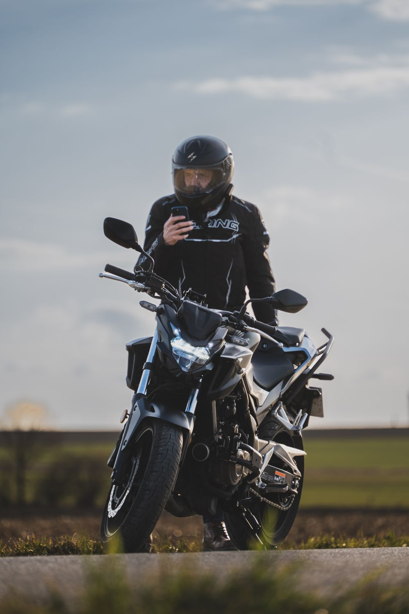
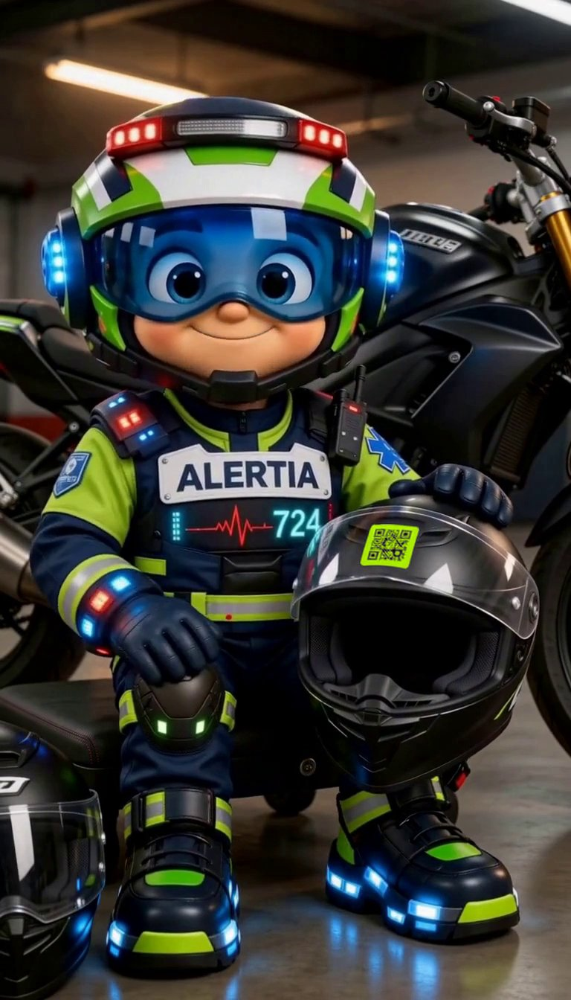
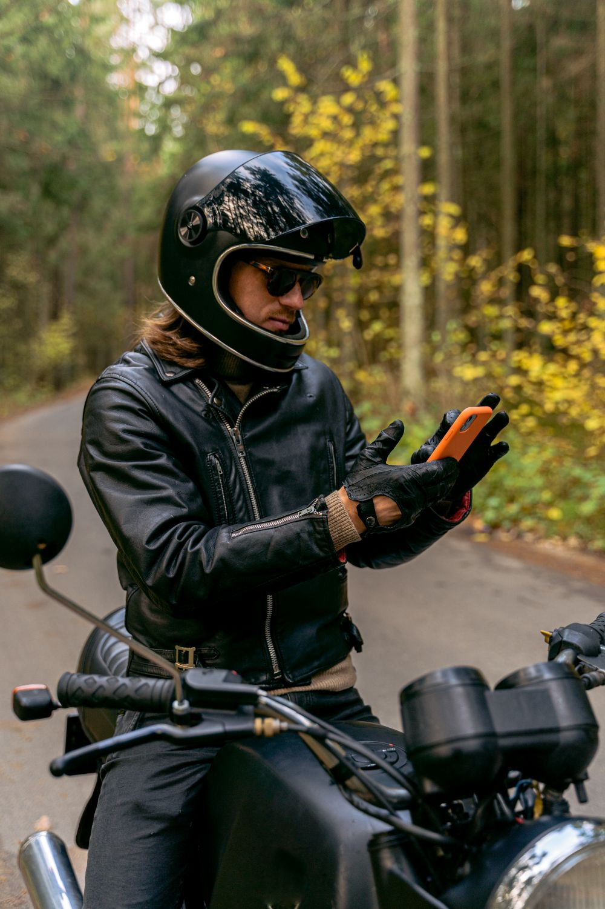
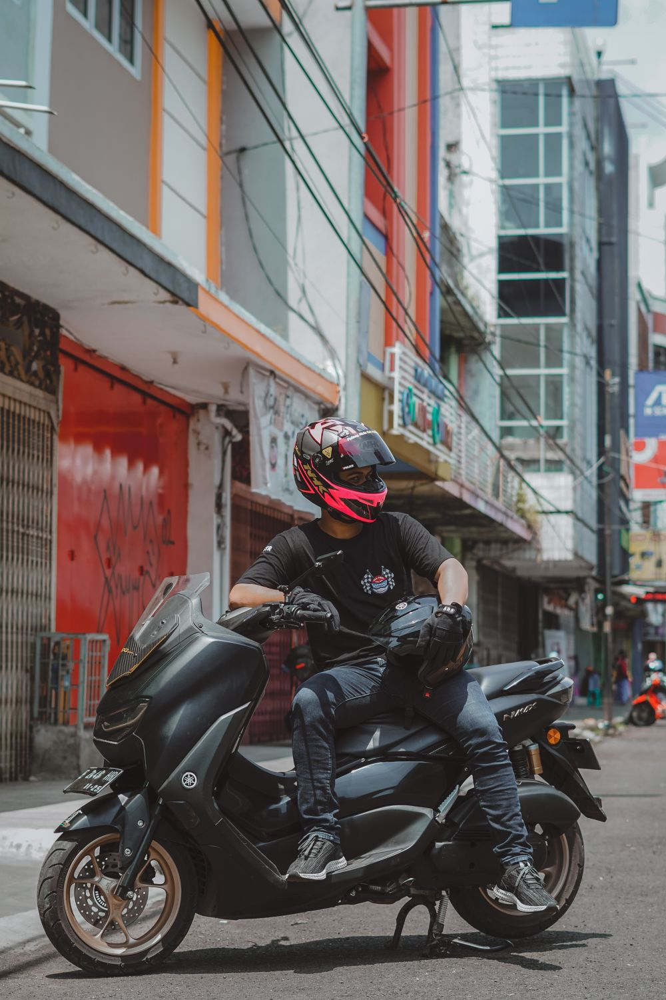
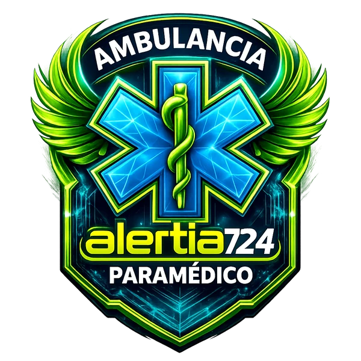
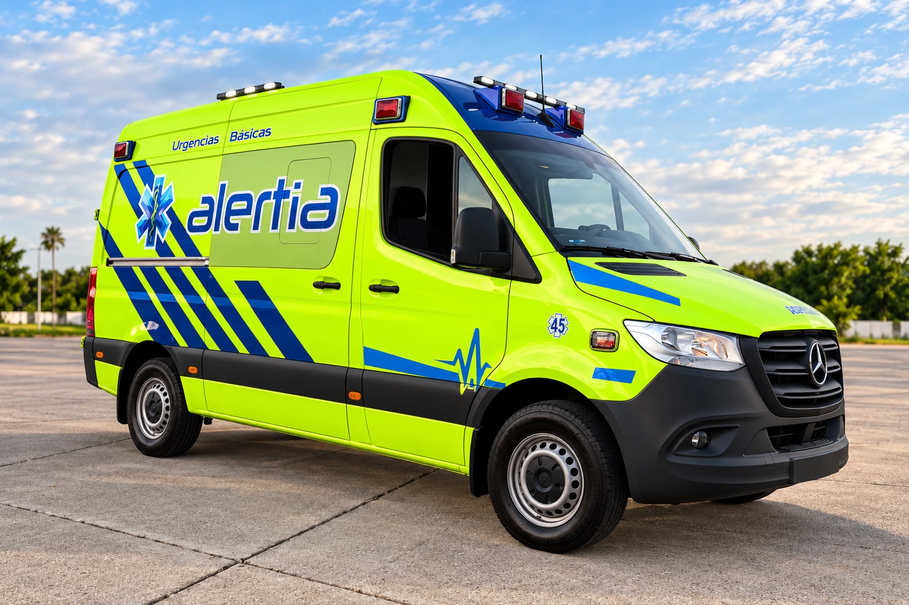

01Tu ficha. Tus decisiones.
Registra tu información de emergencia, agrega a tus contactos y elige qué datos quieres compartir.
REGÍSTRATECONTIGO EN CADA RUTA
El chip que salva vidas.
Un pequeño QR en tu casco. Una forma de hablar por ti cuando tú no puedes. Tu información de emergencia y tus contactos, a un escaneo de distancia.

SENCILLO DESDE EL PRIMER DÍA
Tu casco te protege. Tu chip ayuda a que quien te encuentre sepa cómo ayudarte y a quién llamar.

01Registra tu información de emergencia, agrega a tus contactos y elige qué datos quieres compartir.
REGÍSTRATE
02Obtén tu QR con código único y colócalo en tu casco. Tus datos personales no van impresos en el chip.
COLÓCALO EN TU CASCO
03Cualquier celular puede abrir tu ficha y acceder a los botones de llamada y al aviso por WhatsApp con ubicación.
SAL A RODARTU INFORMACIÓN MERECE CUIDADO
En una emergencia, la información correcta puede ayudar. Por eso tu ficha organiza el acceso por niveles y respeta lo que autorizas mostrar.
Conoce una ficha de ejemploACCESO PÚBLICO
Tu nombre de pila y botones de ayuda. Tipo de sangre y alerta crítica, solo si tú lo autorizas.
PERSONAL AUTORIZADO
Alergias, padecimientos, medicamentos y seguro mediante un código de acceso. Los intentos quedan registrados.
TÚ ELIGES
Decide qué información médica compartes y autoriza por separado el aviso a tus contactos.


TECNOLOGÍA CON RESPALDO HUMANO
Alertia Biker es un proyecto de Ambulancias Alertia724. Nace en Mazatlán con una idea clara: acercar la información y la ayuda cuando más se necesitan.
ANTES DE SALIR A RODAR
Un chip sencillo de usar.
Información que vale la pena conocer.
No. El QR abre la ficha en el navegador del celular de quien lo escanea.
El chip y el registro de Alertia Biker son gratuitos. Esto no incluye servicios de ambulancia; su disponibilidad y costo se consultan directamente con Alertia724.
En esta versión, la persona que escanea utiliza el botón de WhatsApp para compartir el mensaje con tus contactos. La ubicación depende del permiso del navegador y de la conexión disponible.
No. Ante una emergencia, llama siempre al 911. El chip facilita el acceso a información y contactos; no garantiza el envío automático de una ambulancia.
TU PRÓXIMA RUTA EMPIEZA AQUÍ
Sin app. Sin costo de registro. Con el respaldo de Alertia724.